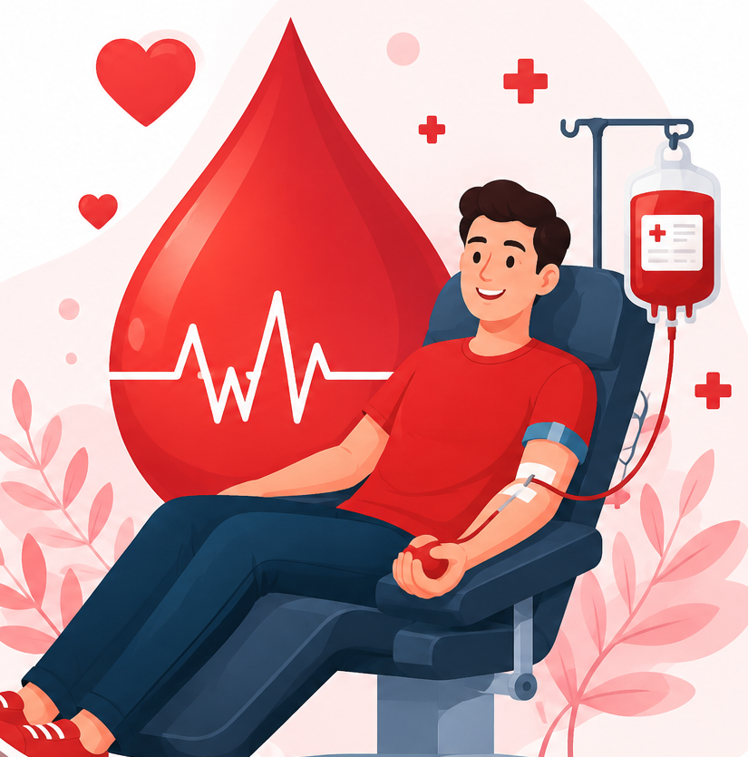

One blood donation can save up to three lives. Become a donor today and help patients in need.

Everything you need for blood donation and emergency blood requests.
Quickly search for available blood donors in your city and connect with them during emergencies.
Search DonorsDonate blood in four simple steps.
Create your donor profile by filling in your personal details.
Basic health screening ensures safe blood donation.
Donate blood safely under medical supervision.
Your donation helps patients and saves precious lives.
Find donors based on compatible blood groups.
Live statistics collected from registered users.
Registered Donors
Hospitals Connected
Lives Saved
Blood Groups
Every donation can save multiple lives. Join our community of voluntary blood donors.
Register as DonorLearn more about blood donation before becoming a donor.
Healthy individuals aged between 18 and 65 years with the required weight and medical fitness can donate blood.
Most healthy adults can donate whole blood once every 3 months.
Yes. Sterile, single-use equipment is used for every donor to ensure complete safety.
Need help? Reach out to us anytime.
Chennai, Tamil Nadu, India
+91 98765 43210
support@blooddonation.com